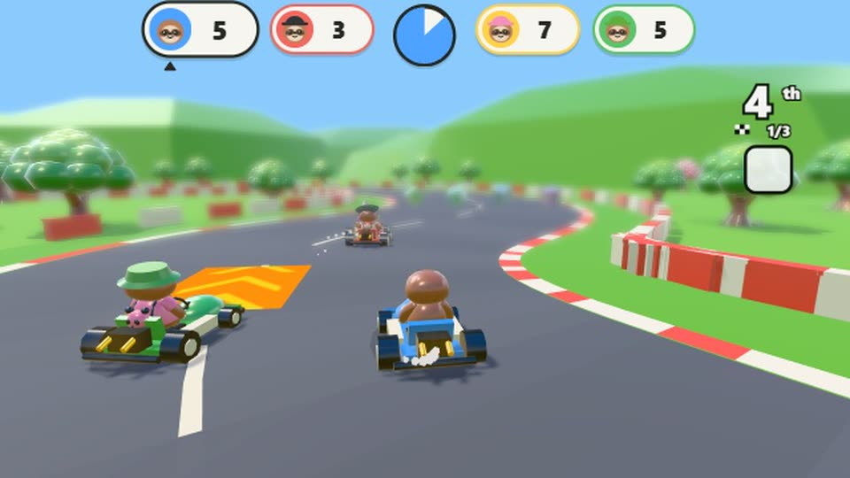
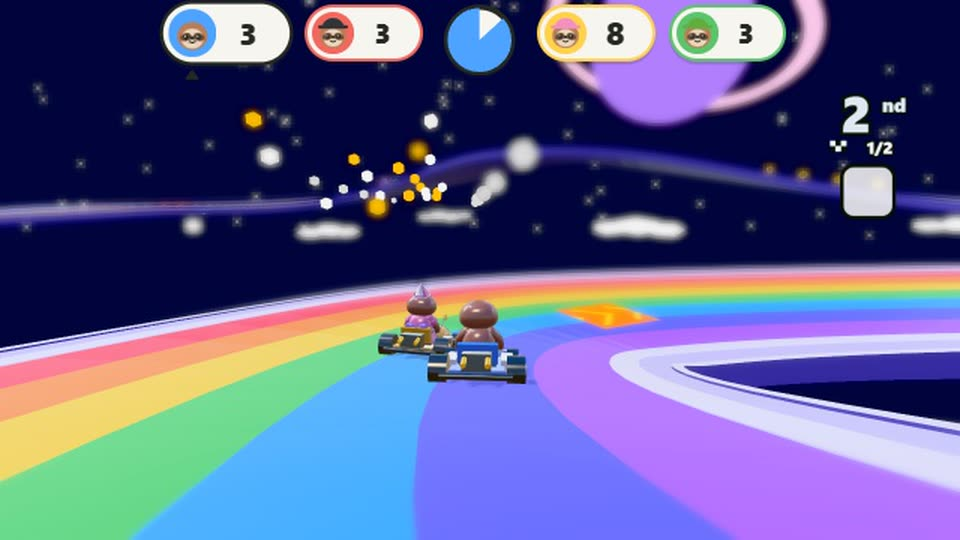
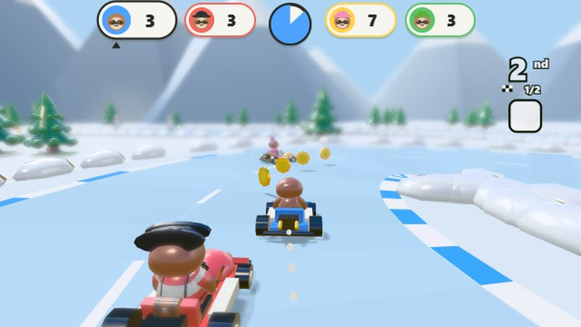

Sloth Kart: a free kart racing game for kids
Five tracks · free in the browser
Sloth Kart is the kart race inside Sloth Jam. Push the stick the way you want to go, hold the button through a bend to drift, and drive through item boxes on the way round. It is free to play in a web browser, with nothing to download, and made so a 6 year old can race next to a grown-up.

The five tracks
- Plaza Loop. Wide and gentle, round the town. Three laps, and the one to learn on.
- Coconut Coast. S-bends along the beach, with palms and rock pools in the road.
- Frosty Peak. A hairpin and slippery ice all the way round. Mind the snowmen.
- Lava Run. A narrow road over the lava with tight turns and no rails. A kart that drops off is put back on the road.
- Rainbow Sky. Sweeping curves over the clouds and boost pads all the way. The best one to drift on.

How to race
- Steer with one stick. Push it the way you want to go, on a keyboard, a touch screen or a game controller.
- Drift for a boost. Hold the button through a bend until the sparks turn blue, then orange, then pink. Let go to shoot ahead.
- Grab an item. Item boxes hold a pepper, a banana, a shell, a seeker or a star.
- Everyone scores. Gates, laps, coins and your finish all count, so every racer takes points home.
Made for young racers
Karts at the back get the better items, so nobody is left alone at the end of the pack. Nobody gets stuck: a kart that leaves the road is put back on it. And there is no reading anywhere in the race, just pictures and numbers.

Where to find it
In town, walk to the go-kart pad. Each track has its own flag behind it, so you can race just that one. Between races you can drive the go-kart round the ring road and collect the eight stars that hang over it.
Sloth Kart runs on a computer, Chromebook, phone or tablet with a web browser. It is free while Sloth Jam is in early access, with no ads and no loot boxes.